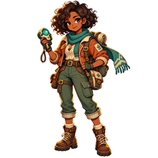
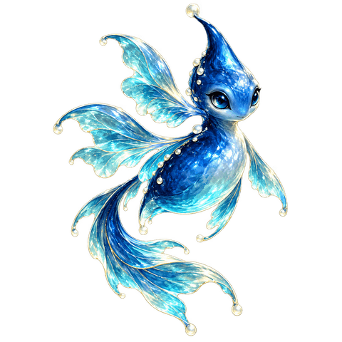
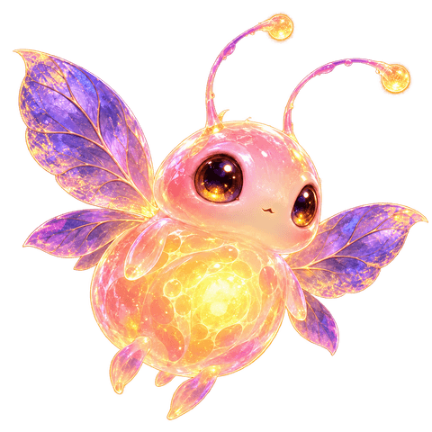

LABORATORIO DE COMBATE 01 / UMBRALUNA NUEVA FORMA DE EXPLORAR
LIGA DE LOS SIETE TERRITORIOS
El guardián
del Umbral.
Al otro lado del lago, una puerta permanece sellada.
Su guardián espera a un equipo capaz de leer las mareas.
◆ Preguntas + estrategia◇ Hasta 3 bioformas◷ A tu ritmo
CAELIXVIGÍA DEL LAGO · FASE I
Iria · guardiana del Umbral
«Una buena decisión ilumina el camino.»

COLECCIÓN CONECTADA◇ MODO ENSAYO Las 33 bioformas están disponibles para ensayar. Son prestadas. Conecta tu cuenta para combatir con tu colección.
PREPARACIÓN / MISIÓN 01
Elige a tus compañeros.
Combina habilidades. Consulta sus habilidades en el Atlas táctico. La vida y el poder se equilibran para que cada equipo tenga una oportunidad.
0 / 3 elegidas
UMBRALES DE BIONOVA / PRÓLOGO
SANTUARIO DEL LAGO
01 / 03El agua guarda ecos.
GIMNASIO DEL UMBRAL
Iria, guardiana del lago
CaelixUMBRAL
BIOFORMA DEL GUARDIÁN


PRÓXIMO MOVIMIENTO DEL RIVAL
Elige tu estrategia. Tu respuesta dará energía al movimiento.
Elige una acción y responde para ejecutarla.TU TURNO